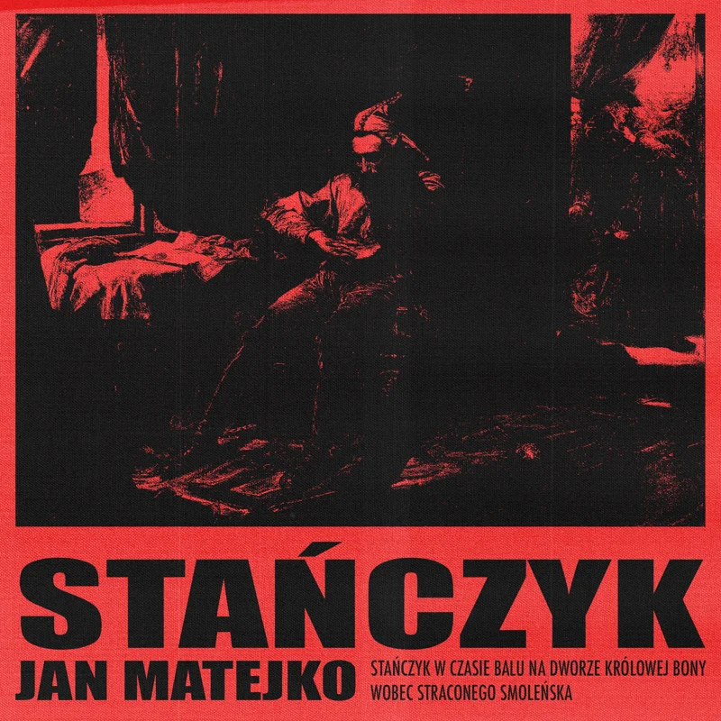
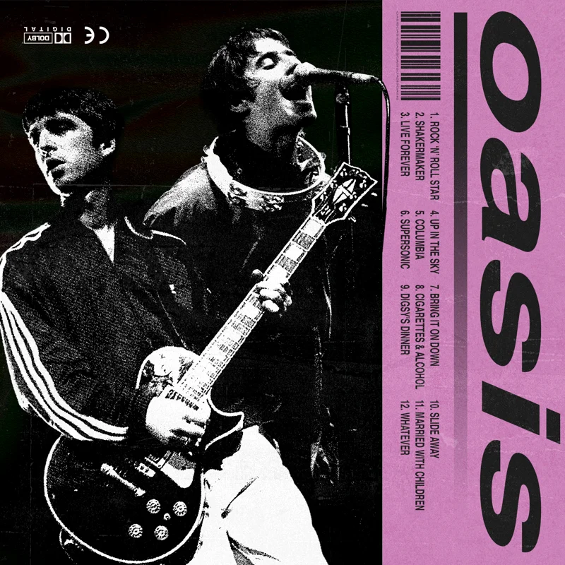

A collection of personal pieces exploring brutalist graphic design through raw typography and high-contrast compositions. The subjects come from personal interests: a fan reimagining of Oasis CD packaging and a poster based on Jan Matejko’s painting Stańczyk. These are personal design experiments.



